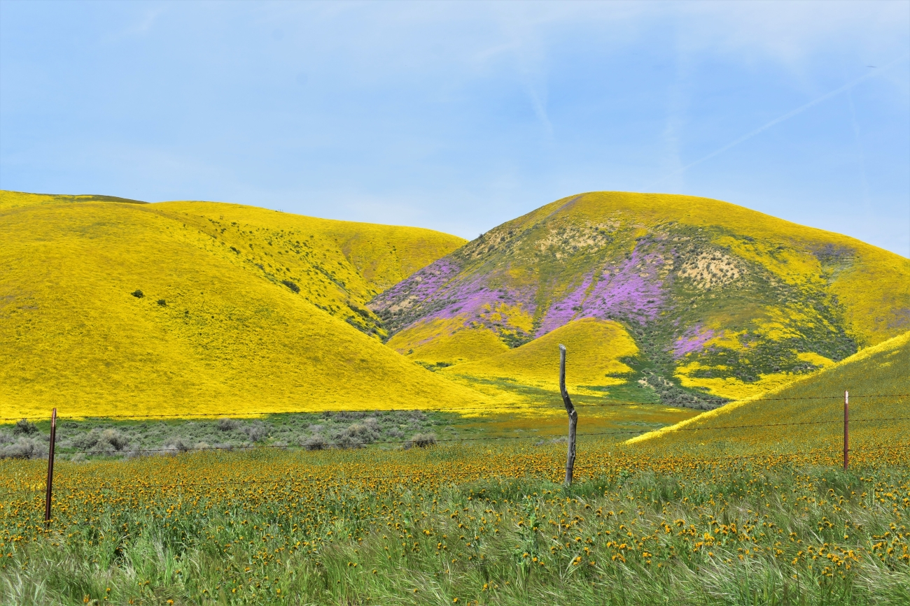
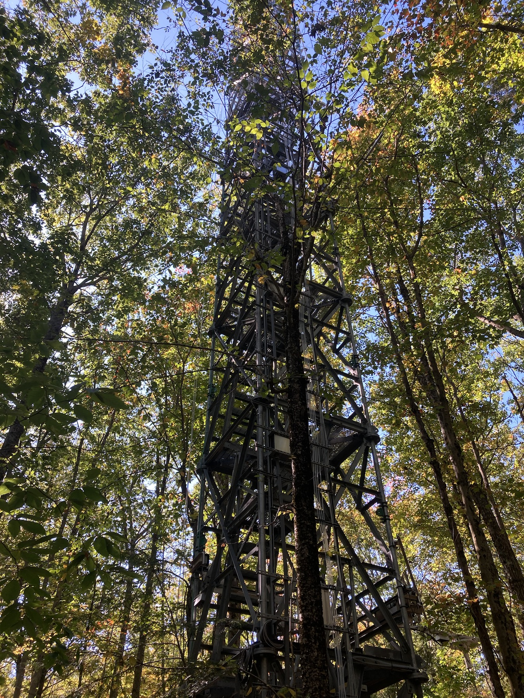
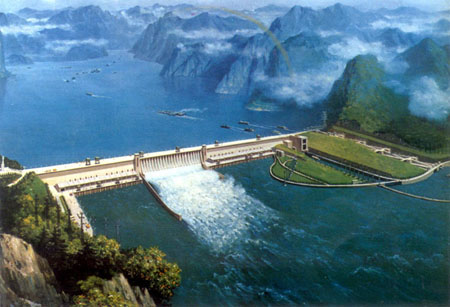
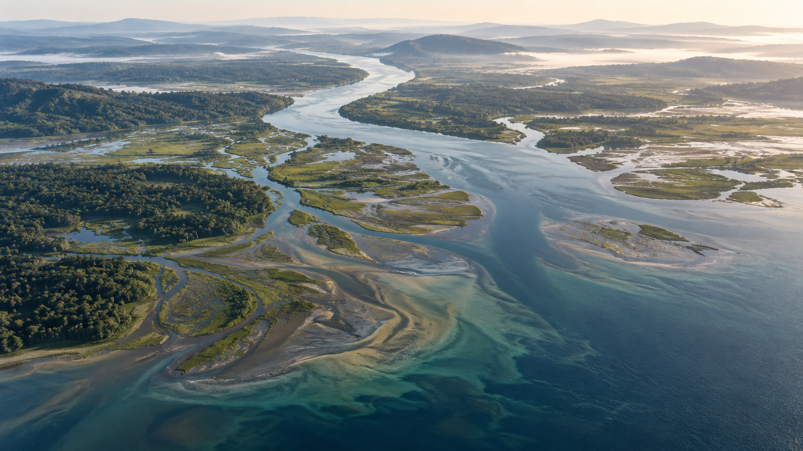

 01 Biodiversity Photo: Ellie DeMarse · USFWS Research directions Biodiversity–Stability Relationships Plant Range Shifts and Diversity Redistribution
 02 Carbon–Climate Feedback Harvard Forest Flux Tower Research directions Trends of Terrestrial Carbon-Climate Feedback Thermal Acclimation of Ecosystem Respiration
 03 Ecohydrology Three Gorges Dam · Yangtze River Research directions Flow – Riparian Vegetation Interactions Dammed Rivers as Complex Social–Ecological Systems
 04 Biogeochemistry River–estuary continuum Research directions Regime Shifts in Eutrophic River Ecosystems Terrestrial Support of Aquatic Food Webs